I lead facility projects at UPS by day and build
the software that runs operations by craft —
from a self-hosted deployment platform to the bid analysis, reporting,
and AI audit tools my teams use every week. Architecture to implementation,
no hand-offs.
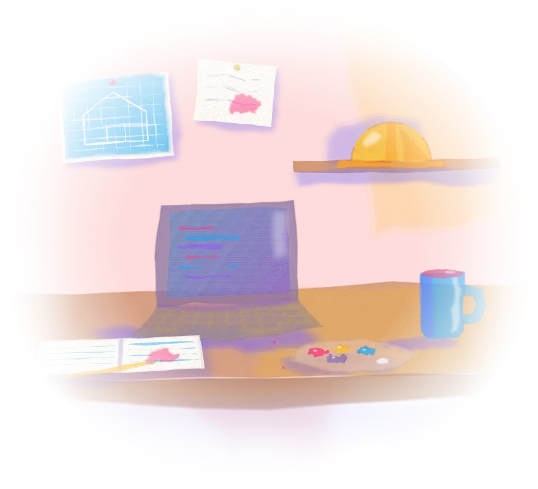
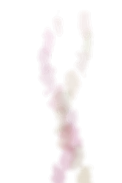
By day
Project Engineer, United Parcel Service
By craft
Full-stack & platform builder
Before that
Web developer, then designer & filmmaker
Based in
Atlanta, Georgia — EST
No.03What I buildPB35 · PR122 · PY74
Three primaries. Everything else is mixed from these.
Three kinds of systems, one standard: they run without me.
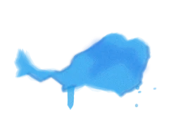
PB35 · Cerulean
Enterprise SaaS & Infrastructure
Multi-tenant platforms with Docker isolation, webhook-driven zero-downtime
deploys, RBAC and audit logs, encrypted secrets, and managed databases — APIs
and event-driven pipelines designed to run unattended.
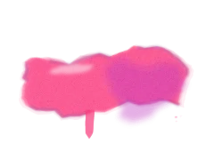
PR122 · Opera Rose
AI-Enabled Workflows
Practical LLM integration into real operational work — like auditing monthly
financial reports against contracted scope — plus an AI-augmented development
practice that compresses delivery time without cutting quality.
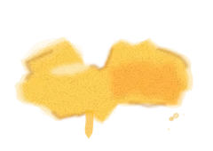
PY74 · Hansa Yellow
Operational Tooling & Automation
Purpose-built tools that replace spreadsheets and file churn: contractor bid
analysis, weekly ops reporting, budget and RFA workflows — adopted by real teams
because they remove work instead of adding it.
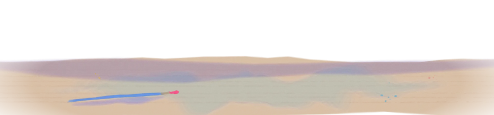
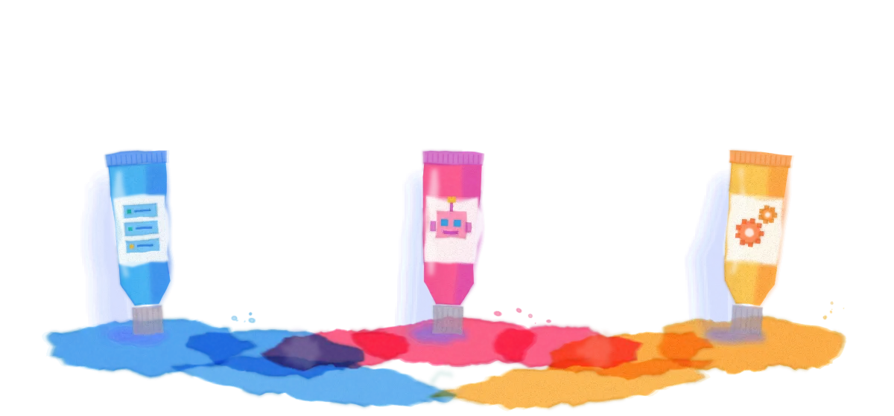
No.04Selected workMixed media
Four finished paintings, all hanging in production.
Built for the real world.
One public platform, two internal tools running inside UPS workflows, and one
AI audit pipeline — all in production.
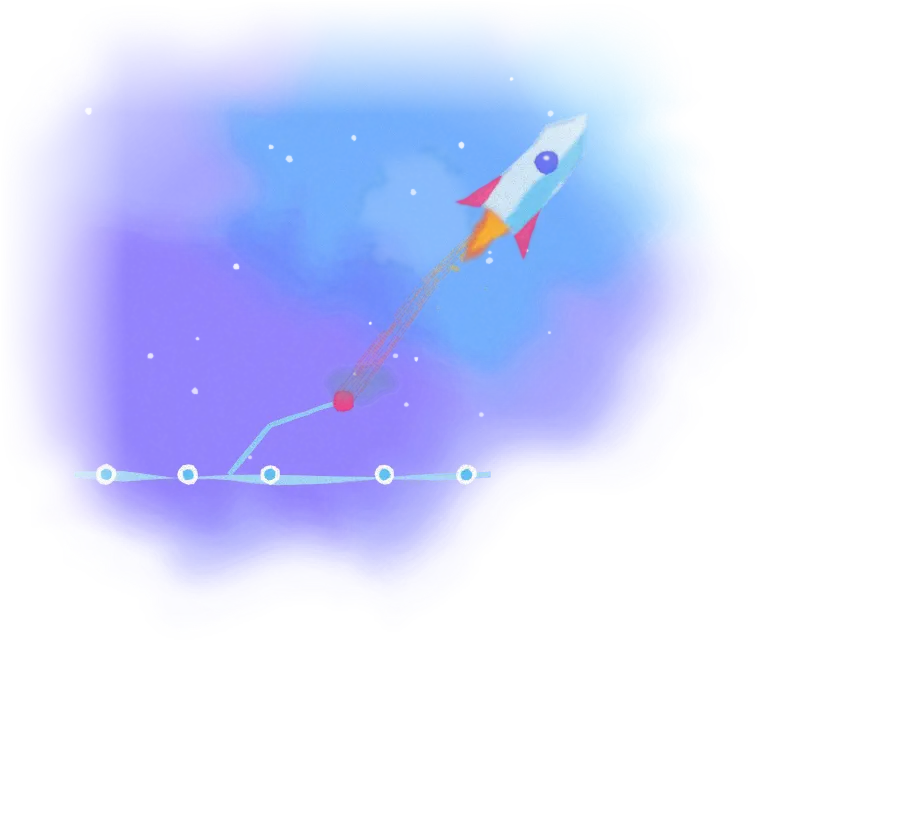
launchport — deploy
$ git push origin main# webhook received by NoiGate► Building container… framework auto-detected► Health check passed · routing updated✓ Live at myapp.launchport.org — 30s
Painting No.1PB29 + PB35
NoiGate
Live SaaS
A self-hosted git-to-production PaaS: push to GitHub and NoiGate auto-detects
the framework, builds an isolated container, wires routing and SSL — live in
~30 seconds. Zero-downtime swaps, PR previews, managed MySQL/Redis, encrypted
secrets, a CLI, and multi-tenant RBAC with audit logs.
Contractors return bids in Excel against project scope; Bid Recap normalizes
them into a comparison dashboard — division-level cost, schedule, OHP, and
alternates side by side. Automatic rankings with override, and governance built
in: choosing anyone but the lowest bidder requires written justification.
Workflow automation
Excel ingestion
Decision logic
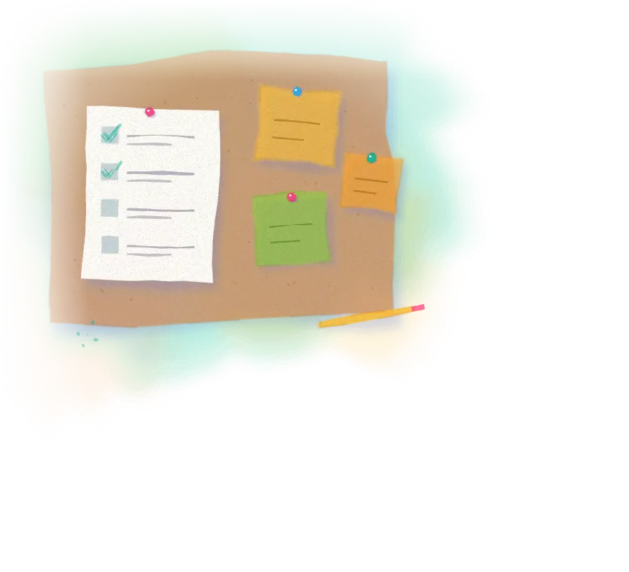
weekly ops review
✓Carry over open itemsDone
✓Decommission — Bay 4Done
Contractor schedule reviewIn progress
Export & distributeTo do
Painting No.3PG7 + PY150
Weekly Ops Review
Internal · Team
Replaced the weekly ritual of recreating report files in SharePoint with a
persistent meeting system: one-click sync from last week so open items carry
forward, live action rollups, templates for retros, 1:1s and planning, present
mode, and Markdown/JSON export. Zero new files created since launch.
An LLM pipeline that audits monthly financial reports against the contracted
scope of work. It cross-references charges to scope and outputs a structured
HTML findings report — what's wrong, exactly where, and insights on patterns —
with a human on final approval.
LLM pipeline
Document analysis
HTML reports
No.05My approachPV23 · Dioxazine Violet
Glazing — thin layers that build depth without muddying.
Where operations meet velocity.
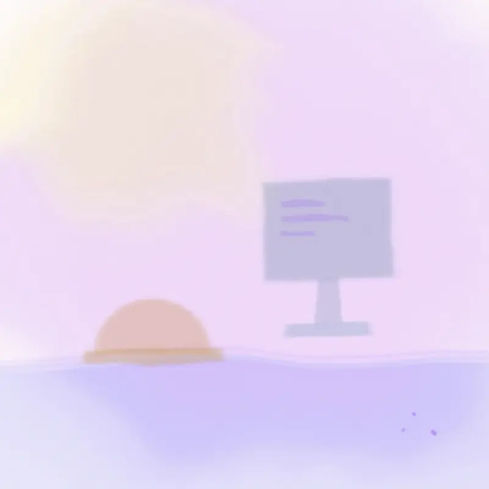
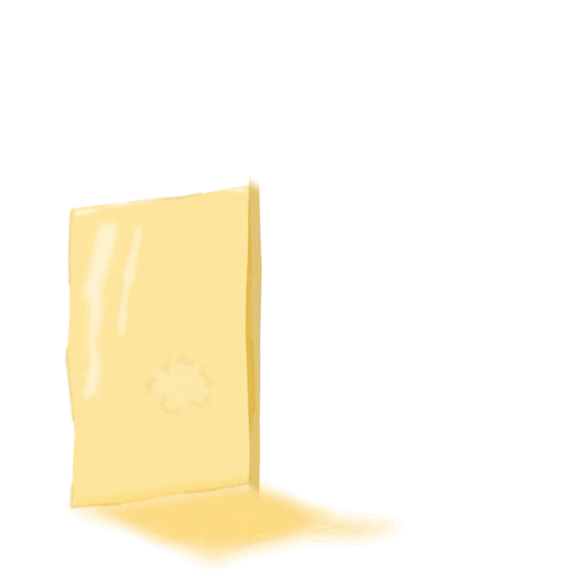
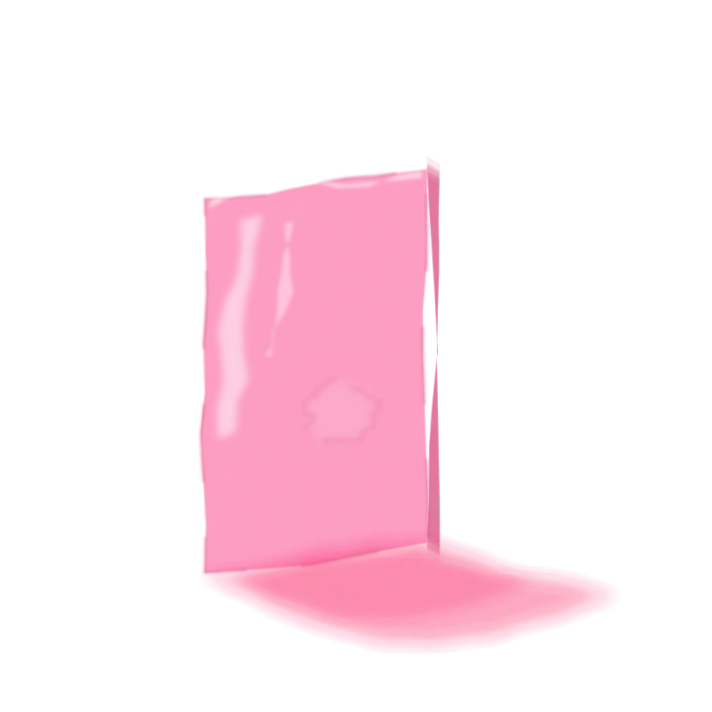
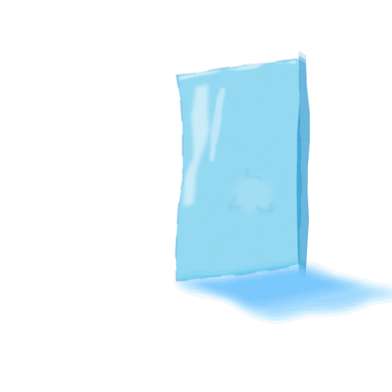
0 of 3 glazes applied
Glaze 1 · Hansa Yellow
Built on real operations
I don't guess at requirements — I live in them. Leading facility projects,
budgets, and contractors at UPS means every tool I build starts from a workflow
I've personally run. That's why they get adopted.
Field problem — hours lost to manual work
System design — APIs, events, boring reliable tech
In production — adopted by the team that needed it
Glaze 2 · Opera Rose
AI-augmented delivery
LLM-assisted development is core practice, not a gimmick — faster iterations,
broader test coverage, tighter reviews. It's how one engineer ships
platform-scale software, and how I'd help a team raise its delivery bar.
EngineerDraft the rollback path for zero-downtime swaps
EngineerShip it. Add the failure case to the test suite.
Glaze 3 · Cerulean
Measured, monitored, trusted
A system isn't done when it ships — it's done when it's trusted. Uptime
monitoring, audit trails, and metrics are built in from day one, so the people
relying on the tool never have to wonder if it's working.
status — all systems99.9% uptime
No.06How it worksPG7 · Phthalo Green
Wet-on-wet — each step bleeds into the next.
From operational problem to running system.
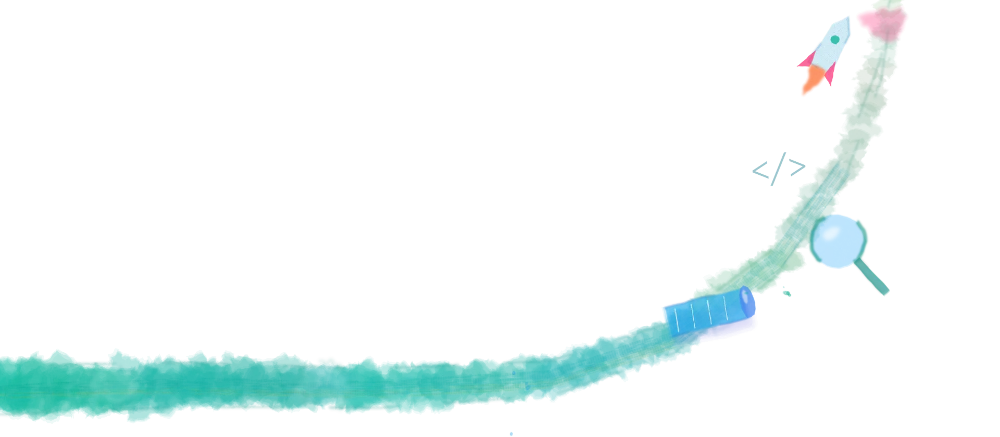
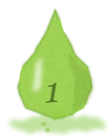
Understand the operation
Sit with the ops, product, and field teams doing the work. Map the real workflow — not the org-chart version.
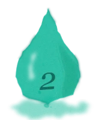
Architect for the long run
Write it down RFC-style: APIs, event-driven where it pays, boring reliable tech everywhere else.
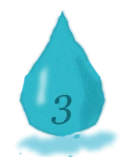
Build AI-augmented
LLM-assisted development as a force multiplier — faster iterations, better coverage, tighter reviews.
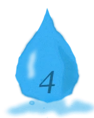
Ship, monitor, evolve
Deploy on automated pipelines, watch the metrics, and iterate with the people using it.
No.07ExperiencePO73 · Pyrrole Orange
Strata — every dried layer still shows through.
A decade across engineering, code & design.
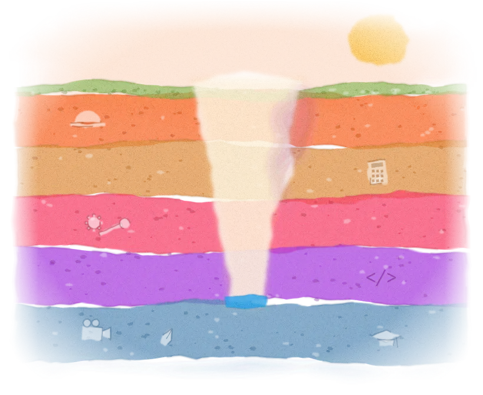
2024 — Now
Project Engineer
United Parcel Service
Lead facility decommissioning programs end-to-end — shutdown sequencing, contractor management, asset disposition, and site remediation under full environmental and safety compliance.
2023 — Now
BaSE — REFCO Coordinator
United Parcel Service
Own all requests-for-authorization under $500K: budget preparation, reconciliation, expense-vs-capitalization classification, and audit documentation — with Power BI reporting on top.
2022 — 2023
Buildings & Systems Engineering
United Parcel Service
Technical and logistical support for automation teams — troubleshooting, parts and inventory control through Maximo, and mechanic supervision on live systems.
2019 — 2021
Full-Stack Web Developer
Atlanta Network Technology
Built and maintained e-commerce platforms end-to-end — UI/UX, backend, and feature delivery with PHP, JavaScript, MySQL, HTML5/CSS3.
2016 — 2019
Design & Media
Capture The Light · KNV Printing
Cinematic wedding videography and editing; brand identity, layout, logo, and icon design. Where the eye for design in everything above comes from.